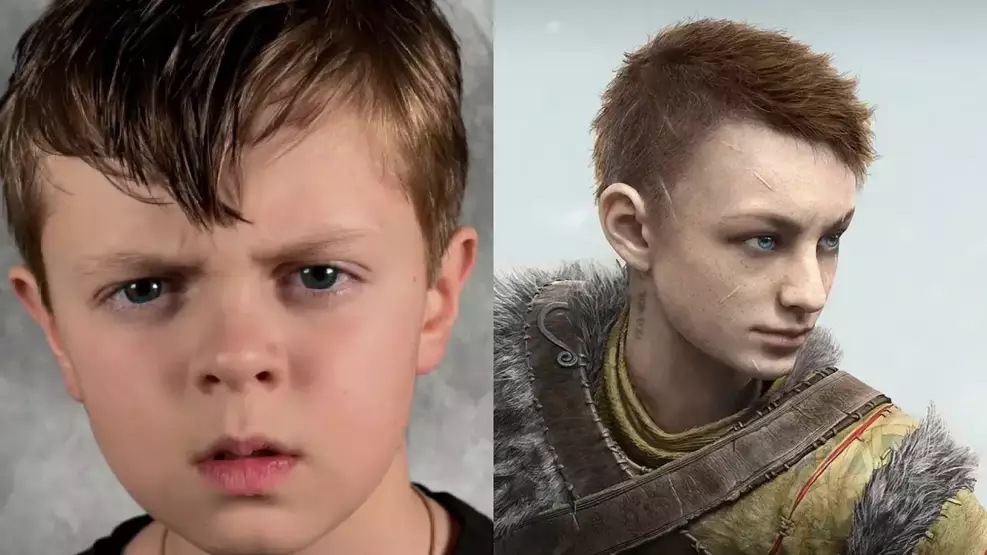
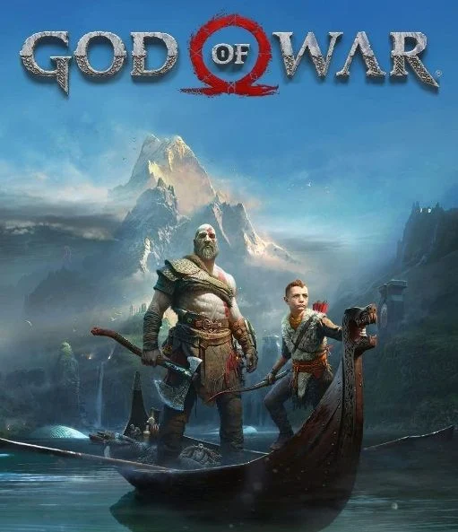

God of War Série em live-action escala seu Atreus
09/02/2026
A escalação de Atreus para a série live-action de God of War do Prime Video foi confirmada recentemente! O ator escolhido para dar vida ao "Boy" é Callum Vinson.
A notícia é bem fresca (de fevereiro de 2026) e Vinson se junta a um elenco que já está ganhando forma para adaptar a saga nórdica.
O Atreus da vida real: Callum Vinson
Vinson é um jovem ator em ascensão, conhecido por seus papéis em produções como The Night Agent (O Agente da Noite) e a série Chucky. Ele também interpretará o jovem Jason Voorhees na série Crystal Lake.
Idade: Callum nasceu em 2014, o que o coloca na faixa etária ideal para o Atreus do primeiro jogo (2018).
Curiosidade: Ele já tem experiência com dublagem e papéis fisicamente exigentes, o que será essencial para as cenas de combate e arquearia.
O que esperar da série?
A primeira temporada deve adaptar os eventos do jogo de 2018, focando na jornada de Kratos e Atreus para espalhar as cinzas de Faye no pico mais alto dos reinos. A produção está acontecendo em Vancouver, no Canadá, sob o comando de Ronald D. Moore (For All Mankind, Outlander).
